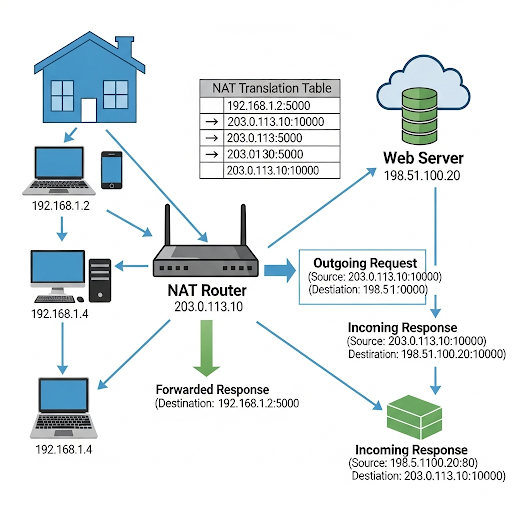
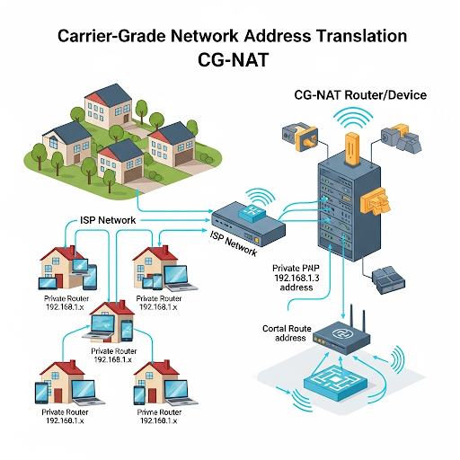

Think of a public IP address as your home's postal address. It is unique on a global scale and is how the rest of the world (the internet) finds your network. Your Internet Service Provider (ISP) assigns this address to your modem or router.
A private IP address is like an apartment number within your home. It’s used to identify devices within your local network, like your laptop, phone, or smart TV. These addresses are not routable on the public internet.
Public IP Example: 203.0.113.50 (visible to the world)
Private IP Examples: 192.168.1.10, 10.0.0.5, 172.16.0.25 (only visible to devices on your local network)
The primary reason for creating two types of IP addresses was IPv4 address exhaustion. The IPv4 protocol uses a 32-bit address, which can only create about 4.3 billion unique addresses. As the number of internet-connected devices exploded—with billions of people and their many devices coming online—it became clear that we would run out of unique public IP addresses.
To solve this, a new system was devised where a large range of IP addresses was reserved for private use. This allowed a single public IP to serve an entire network of private devices, conserving the limited pool of public IPv4 addresses. This clever solution bought the internet a lot of time before the transition to the next-generation protocol, IPv6, became necessary.
When a device on a private network, like your phone, wants to access a website, it sends a request. This request first goes to your router, which acts as a gateway.
The router uses a process called Network Address Translation (NAT). It takes the request, replaces your phone's private IP address with the router's own public IP address, and sends it to the internet. The external server only sees the public IP address of your router, not your phone's private IP.
To keep track of which device made which request, the router maintains a NAT table. This table temporarily stores the mapping between the private IP and port number of your device and the public IP and a unique port number the router uses.
NAT is a fundamental process that allows multiple devices on a private network to share a single public IP address. It's built into virtually every modern router. Its primary function is to translate private, local addresses into a single public address for all outgoing internet traffic, and then to translate incoming traffic back to the correct private device.

CG-NAT is a large-scale version of NAT used by ISPs. It's a method for ISPs to allow many customers to share a limited number of public IP addresses.
With CG-NAT, your home router is assigned a private IP address by your ISP, and the ISP's CG-NAT device translates that private IP to a public one. In this scenario, your entire network is behind a second layer of NAT. This can sometimes cause issues with online gaming, peer-to-peer applications, or hosting a server, as it creates an extra layer of complexity for incoming connections.
